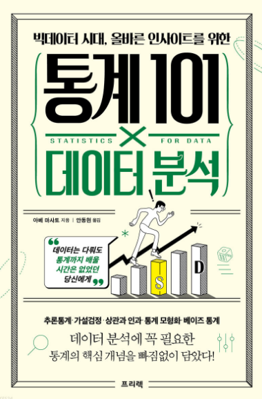

1. 통계학이란?
1.1 데이터를 분석하다
- 데이터 분석의 목적
- 데이터를 요약하는 것
- 대상을 설명하는 것
- 새로 얻을 데이터를 예측하는 것
인과관계 : 2가지 중 하나(원인)을 변화시키면, 다른 하나(결과)도 바꿀 수 있는 관계. 인과관계를 알면 곧 원리(메커니즘)에 관한 지식을 얻는 것이기에 깊은 이해라고 할 수 있다.
상관관계 : 한쪽이 크면 다른 한쪽도 큰(또는 한쪽이 크면 다른 한쪽은 작은) 관계를 말한다. 한쪽을 ’변화시켰다’하더라도 다른 한쪽이 ’변한다’고 단정할 수 없다는 점에서 인과관계와 다르다. 원리에 관련된 몇 가지 가능성을 구별할 수 없으므로, 얕은 이해라 할 수 있다.
선형관계에는 사람이 다루기 쉽고, 해석하기도 쉽다는 특징. 한편, 해석이 어려운 복잡한 관계를 추출하고 예측하는 기계학습이란 방법도 있다.(12장)
1.2 통계학의 역할
- 통계학은 데이터 퍼짐 정도가 클수록 힘을 발휘한다.
- 데이터 분석에서 통계학의 중요한 역할은, 퍼짐(산포, dispersion) 이 있는 데이터에 대해 설명이나 예측을 하는 것.
- 통계학은 이러한 데이터 퍼짐을 ’불확실성’이라 평가하고, 통계학의 목적인 ’대상의 설명과 예측’을 수행
- 통계학은 데이터 퍼짐이나 불확실성에 대처하는 방법을 제공. 그 근거가 되는 것이 데이터 퍼짐이나 불확실성을 확률로 나타내는 확률론이다.
1.3 통계학의 전체 모습
- 기술통계와 추론통계
기술통계(descriptive statistics) : 수집한 데이터를 정리하고 요약하는 방법. 확보한 데이터에만 집중하면서, 데이터 자체의 성질을 이해하는 것을 목표로 한다는 점에 주의.
추론통계(inferential statistics) : 수집한 데이터로부터 데이터의 발생원을 추정하는 방법
- 통계적 추론과 가설검정
추론통계는 크게 2가지가 있다.
통계적 추론(statistical inference) : 데이터에서 가정한 확률 모형의 성질을 추정하는 방법. 예를 들어, 모서리가 닳아버린 주사위라면 각 눈이 나올 확률이 1/6이 아닐지도 모른다. 이럴 때 통계적 추론을 이용하여, 얻은 데이터로부터 각 눈이 어떤 확률로 나오는 주사위인가를 추정할 수 있다.
가설검정(statistical test) : 세운 가설과 얻은 데이터가 얼마나 들어맞는지를 평가하여, 가설을 채택할 것인가를 판단하는 방법
2. 모집단과 표본
2.1 데이터 분석의 목적과 알고자 하는 대상
- 데이터 분석의 목적을 정하기.
- 알고자 하는 대상을 명확히 하기.
2.2 모집단
- 모집단 : 알고자 하는 대상 전체
‘지금 알고자 하는 대상은 무엇인지’, ’무엇을 모집단으로 설정할 것인지’의 문제에는 항상 주의를 기울여야 한다.
- 유한모집단
- 무한모집단
2.3 모집단의 성질을 알다
- 모집단은 데이터 분석에서 알고자 하는 대상 전체를 가리키기 때문에, 모집단의 성질을 알 수 있다면 대상을 설명하거나 이해할 수 있고, 미지의 데이터를 예측할 수도 있게 된다.
- 모집단의 성질이란, 다음과 같이 모집단에 포함된 요소를 특징 짓는 값이다.
- 한국인 남성의 평균 키는 172.5cm이다.
- 한국인 여성의 평균 키는 159.6cm이다.
- 신약을 복용한 사람의 최고 혈압 평균은 120mmHg이다.
- 이 주사위는 모든 눈이 균등하게 나온다.
- 이 주사위는 6의 눈이 1/4 확률로 나온다.
- 그렇다면 이러한 모집단의 성질을 알기 위해서는 어떻게 해야 할까?
- 전수조사 : 모집단에 포함된 모든 요소를 조사
모집단에 포함된 요소의 개수가 한정된, 유한모집단일 때 선택할 수 있는 조사 방법.
전수조사의 경우 ‘분석할 데이터 = 모집단’. 그러므로 획득한 데이터의 특징을 파악하고 기술하기만 해도, 모집단의 성질을 설명하고 이해할 수 있다.
전수조사의 어려움 : 비용이나 시간 면에서 부담이 막대하여 실현 불가능할 때가 대부분.
- 표본조사 : 모집단의 일부를 분석하여 모집단 전체의 성질을 추정하는 추론통계(inferential statistics) 라는 분야가 있으며, 이것이야말로 통계학의 참모습이라 할 수 있다.
표본(sample) : 추론통계에서 조사하는 모집단의 일부
표본추출(sampling) : 모집단에서 표본을 뽑는 것
표본조사 : 표본을 이용해 모집단의 성질을 조사하는 것
표본을 통해 모집단의 성질을 알 수 있는 잘 알려진 방법으로, 선거 출구조사를 들 수 있다. 일부의 표만으로도 당선확실 여부를 알 수 있다.
추론통계는 ’추론’이라는 말에서 알 수 있듯이 모집단의 성질을 100% 알아맞힐 수는 없으며, 어느 정도 불확실성을 염두에 두고 평가하게 된다.
대상을 설명(이해)하고 예측하기 위해서는 모집단의 성질을 알아야 한다.
일반적으로 모집단을 대상으로 한 전수조사는 어렵다.
표본을 조사하면 모집단의 성질을 추정할 수 있다.
표본크기 : 표본에 포함된 요소의 개수를 표본크기(sample size)라 부르며, 보통 알파벳 \(n\)으로 나타낸다. 예를 들어 표본으로 30개를 추출했다면, \(n\)=30이라 표기한다.
통계학에서 샘플 수라고 하면 표본의 개수를 뜻한다. 예를 들어 20명으로 이루어진 표본A와 이와 별개로 30명으로 이루어진 표본B가 있는 경우, 표본은 A, B 2개이므로 샘플 수는 2가 된다. 이처럼 표본크기와 표본의 개수는 혼동하기 쉬우므로 주의.
표본크기는 모집단의 성질을 추정할 때의 확실성이나 가설검정의 결과에도 영향을 끼치기 때문에, 통계분석에 있어 중요한 요소 중 하나.
3. 통계분석의 기초
3.1 데이터 유형
- 모집단과 표본
- 변수 : 데이터 중 공통의 측정 방법으로 얻은 같은 성질의 값
예를 들어, 키는 하나의 변수이다. 변수는 각각 다른 값을 취할 수 있으므로 변수라고 불린다.
변수가 여러 개인 경우, 변수 간의 관계를 밝히고자 데이터를 분석할 수 있다.
통계학에서 변수의 개수는 ’차원’이라 표현되기도 한다.
여러 개의 변수를 포함한 데이터는 ’고차원 데이터’라 한다.
- 다양한 데이터 유형
변수의 유형마다 분석 방법이 달라지기 때문에, 데이터를 수집할 때나 분석을 실행할 때는 변수가 어떤 유형인지 주의 깊게 고려하는 것이 중요
- 양적 변수 (수치형 변수)
수치로 나타낼 수 있는 변수를 양적 변수라 한다. 양적 변수는 다시 이산형과 연속형으로 나눌 수 있다.
- 이산형
얻을 수 있는 값이 점점이 있는 변수를 이산형 양적 변수(이산변수) 라 한다. ex) 주사위의 눈은 나오는 값이 1부터 6까지의 정수
- 연속형
키 173.4cm나 몸무게 65.8kg 같이 간격 없이 이어지는 값으로 나타낼 수 있는 변수를 연속형 양적 변수 (연속변수) 라 한다.
이는 정밀도가 높은 측정 방법을 이용하면, 원리상으로는 소수점 아래 몇 자리든 나타낼 수 있다는 점에서 이산형과는 다르다.
이산형과 연속형의 차이점은 확률분포의 종류와 밀접한 관계가 있으므로, 데이터를 다룰 때는 주의
- 질적 변수 (범주형 변수)
숫자가 아닌 범주로 변수를 나타낼 때, 이를 질적 변수 또는 범주형 변수라 한다. ex) 설문조사의 예/아니오, 동전의 앞/뒤
숫자인 양적 변수와 달리, 변수 사이에 대소 관계는 없다.
또한 범주형 변수는 숫자가 아니므로, 평균값 등의 수치 역시 정의할 수 없다.
3.2 데이터 분포
- 그림으로 데이터 분포 표현하기
’데이터가 어떻게 분포되어 있는지’를 그래프 등으로 시각화하여, 대략적인 데이터 경향을 파악하는 것이 데이터 분석의 첫 단계
데이터 분포를 그림으로 나타내는 데는 어떤 값이 데이터에 몇 개 포함되어 있는가(도수, 빈도, 횟수)를 나타내는 그래프인 도수분포도(히스토그램) 를 자주 사용
- 히스토그램은 그림으로 나타낸 것일 뿐
히스토그램은 대략적인 데이터 구성을 파악하는 것이 목적이지, 무엇인가 결론을 내기 위한 것이 아니라는 점을 명심
3.3 통계량
- 데이터 특징 짓기
수집한 데이터로 이런저런 계산을 수행하여 얻은 값을 일반적으로 통계량 이라 한다.
데이터 그 자체의 성질을 기술하고 요약하는 통계량을, 기술통계량 또는 요약통계량 이라 부른다.
- 통계량과 정보
1개 또는 몇 개의 통계량으로 요약한다는 것은, 데이터에 있는 정보 중 버리는 부분이 있다는 것을 뜻한다. 예를 들어 평균값에는 ’어느 정도 데이터가 퍼져 있는지’의 정보는 포함되지 않습니다. 다른 예로 데이터에 포함된 가장 큰 값인 최댓값도 하나의 통계량이지만 여기에는 데이터 전체의 경향을 알 수 있는 정보가 없다. 이처럼 최댓값은 분포의 중심 위치나 분포 형태에 관한 정보가 주어지지 않으므로, 분포를 파악하는 데는 적합한 통계량이 아니다.
- 다양한 기술통계량
대략적인 분포 위치를 나타내는 대푯값 : 평균값, 중앙값, 최빈값
데이터 퍼짐 정도를 나타내는 값 : 분산, 표준편차
- 평균값(mean)
표본의 평균값은 표본에서 얻었다는 점에서 ’표본평균’이라고도 한다.
\[ \bar{x} = \frac{1}{n}(x_1+x_2+...+x_n) = \frac{1}{n}\sum^n_{i=1} x_i \]
평균값은 계산 시 모든 값을 고려하기 때문에 이상값의 영향을 받기 쉽다는 특징이 있다.
- 중앙값(median)
‘크기 순으로 값을 정렬했을 때 한가운데 위치한 값’
표본크기 \(n\)이 홀수라면 가운데 값은 1개이므로 이 값이 중앙값이다. 한편 표본크기 \(n\)이 짝수일 때는 가운데에 있는 값이 2개이므로, 두 값의 평균값을 중앙값으로 한다.
중앙값은 수치 자체의 정보가 아닌 순서에만 주목하기에, 극단적으로 크거나 작은 값이 있어도 영향을 받지 않는다는 특징이 있다.
- 최빈값(mode)
‘데이터 중 가장 자주 나타나는 값’
처음에 히스토그램을 그려 대략적인 파악을 한 다음, 대푯값으로 적절하게 분포를 특징 지을 수 있는지 확인하는 것이 중요한 데이터 분석 작업 순서라는 점을 꼭 기억
- 분산과 표준편차
데이터 퍼짐을 평가하기 위해서는 분산(variance) 혹은 표준편차(standard deviation, S.D.) 라는 통계량을 계산.
표본에서 구하고, 표본을 평가한다는 점을 강조하여 ’표본분산(sample variance)’이나 ’표본표준편차(sample standard deviation)’라 부르기도 한다.
표본분산 은 표본의 각 값과 표본평균이 어느 정도 떨어져 있는지를 평가하는 것으로, 데이터 퍼짐 상태를 정량화한 통계량이다.
\[ s^2 = \frac{1}{n}\{(x_1-\bar{x})^2 + (x_2-\bar{x})^2+...+(x_n-\bar{x})^2\} = \frac{1}{n}\sum^n_{i=1}(x_i-\bar{x})^2 \]
- 표본분산의 성질
$ s^2 $
모든 값이 같다면 0
데이터 퍼짐 정도가 크면 \(s^2\)이 커짐
표본표준편차 \(s\)는, 이 표본분산의 제곱근을 취한 값이다.
계산상 분산과 표준편차에는 제곱근인지 아닌지의 차이만 있으며, 포함하는 정보에는 차이가 없다. 분산 단위는 원래 값 단위의 제곱이 되지만, 표준편차는 제곱근을 취하므로 원래 단위와 일치한다. 따라서 데이터 퍼짐 정도를 정량화한 지표로는 표준편차 쪽이 감각적으로 더 알기 쉽게 느껴진다.
- 분산을 확인할 수 있는 상자 수염 그림
이름처럼 상자와 수염으로 구성되며, 각각은 데이터의 분포를 특징 짓는 통계량을 나타낸다.
제1 사분위수(Q1) : 데이터의 25%가 이 값보다 작거나 같음
제2 사분위수(Q2) : 중앙값
제3 사분위수(Q3) : 데이터의 75%가 이 값보다 작거나 같음
사분위간 범위 : 제1 사분위수와 제3 사분위수 간의 거리(Q3-Q1). 상자로 나타낸 부분.
수염은 상자 길이(사분위간 범위)의 1.5배 길이를 상자로부터 늘인 범위 안에서, 최댓값 또는 최솟값을 가리킨다.
이 범위에 포함되지 않은 값은 이상값으로 정의된다.
상자 수염 그림은 중앙값이나 사분위수, 최댓값, 최솟값 등의 통계량은 나타내는 반면, 히스토그램에서 볼 수 있는 상세한 분포 형태 정보는 포함하지 않는다.
- 분포를 시각화하는 다양한 방법
막대그래프(평균값) + 오차 막대(S.D. or S.E.)
바이올린 플롯
스웜 플롯
상자 수염 그림 + 스웜 플롯